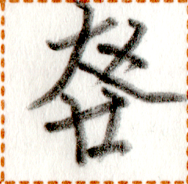

【後】
yp
【後】
yp


variants / 异体字 / 異体字
- 【后】
occurrences / 出现次数 / 出現回数 : 2
Show all occurrences / 显示所有出现 / 全ての出現例を表示
我目終一猫行一犬之後。
pai2 ta1 ta et2 ne2 mok1 et2 pa2 a yp.
I saw a cat chasing after the dog. / 我看见一只猫追着一只狗跑。
Words containing this character / 包含这个磷字的词语 / この燐字を含む語 :
| mok1 // yp | 行 // 後 | verb-object compound | to chase |